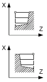
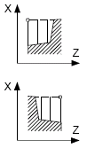
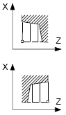

G code program parameters | | ShopTurn program parameters |
|---|
PL | Machining plane | | | T | Tool name | |
SC | Safety clearance | mm | D | Cutting edge number | |
F | Feedrate | * | F | Feedrate | mm/rev |
| | | | S / V  | Spindle speed or constant cutting rate | rpm
m/min |
Parameter | Description | Unit |
|---|
Machining | ∇ (roughing) ∇∇∇ (finishing)
| |
Position | Machining position:   | |
Machining
direction | Stock removal direction (transverse or longitudinal) in the coordinate system | |
Parallel to the Z axis (longitudinal) | Parallel to the X axis (transverse) | |
outside  | inside  | outside  | Inside  | |
X0 | Reference point in X ∅ (abs, always diameter) | mm |
Z0 | Reference point in Z (abs) | mm |
X1 | End point X (abs) or end point X in relation to X0 (inc) | |
Z1 | End point Z (abs) or end point Z in relation to Z0 (inc) | |
D | Maximum depth infeed – (not for finishing) | mm |
UX | Finishing allowance in X – (not for finishing) | mm |
UZ | Finishing allowance in Z – (not for finishing) | mm |
FS1...FS3 or R1...R3 | Chamfer width (FS1...FS3) or rounding radius (R1...R3) - (not for
stock removal 1) | mm |
| | Parameter selection of intermediate point The intermediate point can be determined through position specification or angle. The following combinations are possible - (not for stock removal 1 and 2) XM ZM XM α1 XM α2 α1 ZM α2 ZM α1 α2
| |
XM | Intermediate point X ∅ (abs) or intermediate point X in relation to X0 (inc) | mm |
ZM | Intermediate point Z (abs or inc) | mm |
α1 | Angle of the 1st edge | Degrees |
α2 | Angle of the 2nd edge | Degrees |
* Unit of feedrate as programmed before the cycle call
See also:
Function - CYCLE951
Tool, offset value, feedrate and spindle speed (T, D, F, S, V)
Machining plane, milling direction, retraction plane, safe clearance and feedrate (PL, RP, SC, F)